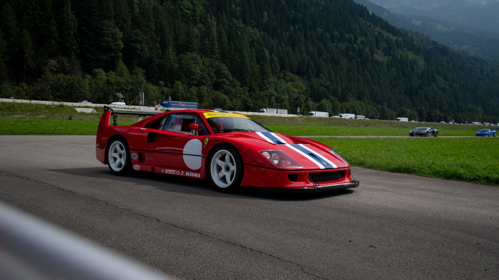
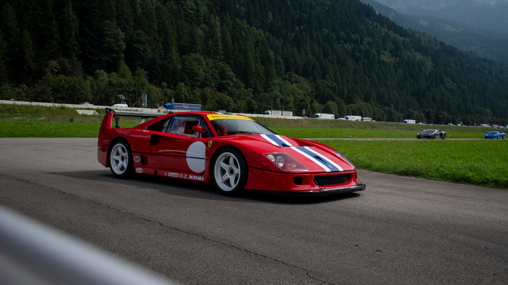
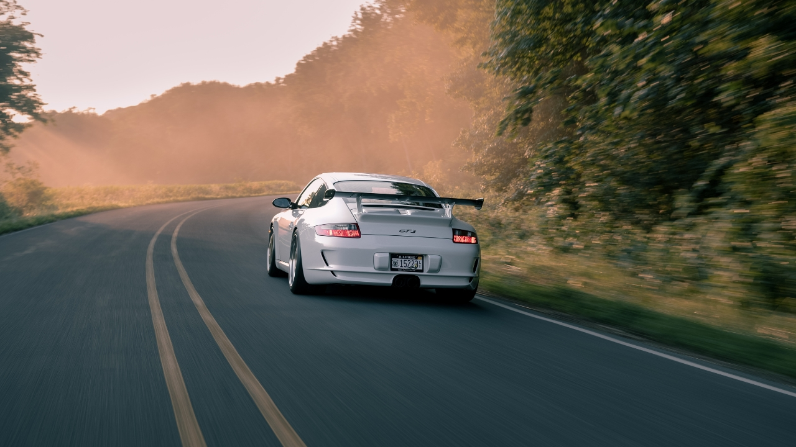
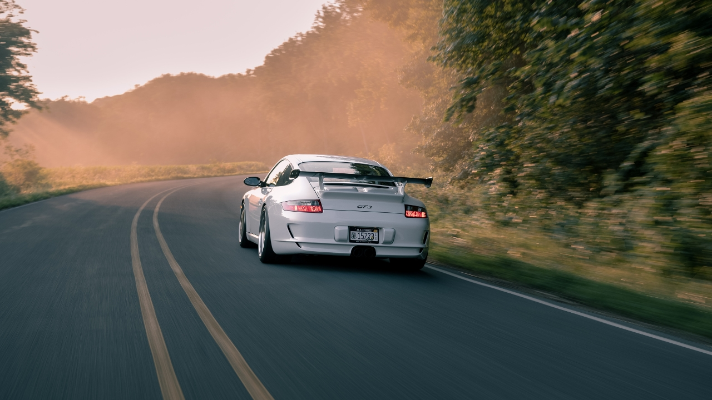
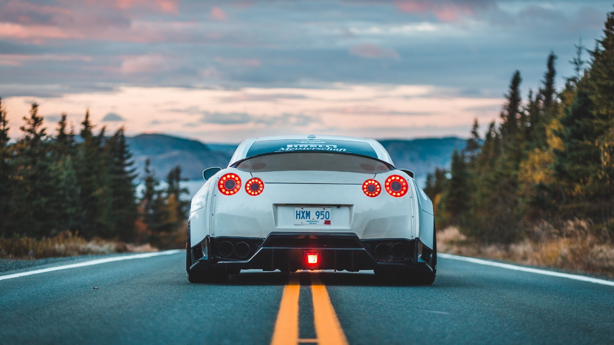
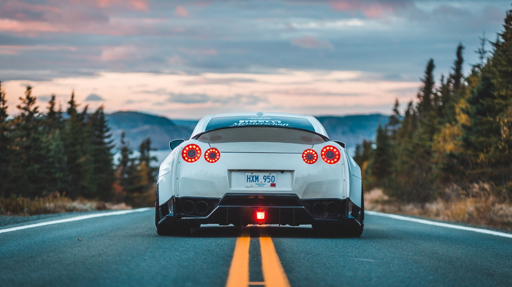

Información
1Origen El Nacimiento del Mito
La historia de los autos deportivos comenzó cuando dejaron de ser simples medios de transporte… y se transformaron en máquinas de emociones. A finales del siglo XIX, el Mercedes Simplex marcó el inicio de una nueva era. Después llegaron gigantes como Bugatti, Alfa Romeo y Ferrari, que no solo dominaron las calles, sino también las pistas de carrera. Los autos deportivos no solo ofrecían velocidad: representaban pasión, riesgo y gloria. Pilotos legendarios como Juan Manuel Fangio y Ayrton Senna convirtieron estos vehículos en íconos de competencia y elegancia. Desde entonces, cada aceleración y cada curva cerrada nos recuerda que estos autos no son solo ingeniería: son historia, arte y adrenalina sobre ruedas.
2Diseño y Tecnología La Belleza de lo
Funcional
Desde las curvas elegantes de los años 50 hasta los ángulos afilados y materiales ultraligeros de hoy, los
autos deportivos han sido vitrinas móviles de innovación. Cada detalle está pensado para deslizar el aire,
abrazar el asfalto y emocionar al conductor.
Tecnologías como la inyección electrónica, el control de tracción y los sistemas de suspensión
inteligentes han transformado estas bestias en máquinas inteligentes. Ya no basta con ir rápido, ahora se
busca ir rápido con estilo, precisión y seguridad.

3Cultura Pop De Íconos de Metal a Leyendas
de la Pantalla
Imagina un rugido que atraviesa décadas. Un collage de leyendas: desde los Mercedes Simplex de principios del siglo XX hasta los superdeportivos eléctricos del mañana. Todos juntos, alineados sobre una pista infinita que conecta historia, tecnología, velocidad y pasión. Los autos deportivos no nacieron simplemente para ir rápido. Nacieron para emocionar, para inspirar, para desafiar los límites de lo posible. Son obras maestras del diseño y la ingeniería, pero también reflejos de una cultura que siempre ha buscado ir un poco más allá. Este artículo es un viaje a través del tiempo: exploraremos la evolución de estos íconos, su impacto en el automovilismo, su papel en la cultura pop y cómo están conquistando también el futuro eléctrico.
4Competencia Donde Todo Comenzó… y Nunca
Terminó
Los autos deportivos no se forjan solo en fábricas, sino en circuitos de fuego y velocidad. Desde la Fórmula 1 hasta Le Mans, la evolución del automovilismo ha sido el laboratorio donde nacen las tecnologías que luego llegan a nuestras calles. La suspensión activa, los frenos regenerativos o la aerodinámica activa no serían posibles sin la presión de una carrera. Lo que hoy manejas en la ciudad, ayer fue probado al límite por un piloto jugándose la vida a 300 km/h.
5El Futuro es Eléctrico (y Aún Más
Rápido)
Tesla, Porsche, Rimac… La revolución eléctrica ha llegado al mundo de los autos deportivos, y no tiene nada de silenciosa. Hoy, un auto eléctrico puede acelerar de 0 a 100 en menos de 2 segundos, dejando atrás a muchos superdeportivos tradicionales. Y lo hace sin una gota de gasolina. Pero no todo es potencia. El enfoque actual también apunta a la sostenibilidad, la eficiencia y la inteligencia automotriz. El futuro de los deportivos se conecta a 5G, aprende con inteligencia artificial y se adapta a cada conductor.
Algunos de los Deportivos más íconicos
Ferrari 250 GTO: Considerado uno de los automóviles más valiosos y deseados del mundo, el Ferrari 250 GTO se produjo entre 1962 y 1964. Con su distintivo diseño y su impresionante desempeño en las carreras, este modelo se ha convertido en un ícono del automovilismo.
Chevrolet Corvette: El Corvette es un símbolo de los automóviles deportivos estadounidenses. Introducido en 1953, ha pasado por varias generaciones y ha cautivado a los entusiastas con su estilo audaz y su potencia impresionante. El Corvette es conocido por su relación calidad-precio y su desempeño de alto nivel.
Ford Mustang: El Mustang es uno de los autos deportivos más emblemáticos de Estados Unidos y se ha convertido en un ícono de la cultura automotriz. Lanzado en 1964, el Mustang popularizó el concepto de los "pony cars" y ha sido un éxito continuo en términos de ventas y presencia en el mercado.
Nissan Skyline GT-R: Conocido como el "Godzilla" en el mundo de los automóviles deportivos, el Skyline GT-R de Nissan se ha ganado un lugar en la cultura popular y en los corazones de los entusiastas del automovilismo. Su combinación de tecnología avanzada y desempeño impresionante lo convierte en un ícono para los fanáticos de los autos japoneses.
Porsche 911: Introducido en 1963, el Porsche 911 se ha mantenido como uno de los autos deportivos más reconocidos y exitosos de todos los tiempos. Con su diseño distintivo de carrocería trasera y motor bóxer, el 911 ha evolucionado a lo largo de los años, pero siempre ha conservado su identidad y espíritu deportivo.
Lamborghini Miura: El Miura, lanzado en 1966, fue un hito para Lamborghini y estableció el estándar para los superdeportivos modernos. Con su diseño revolucionario de motor central y líneas elegantes, el Miura se convirtió en un referente en cuanto a estilo y desempeño.
Jaguar E-Type: Introducido en 1961, el Jaguar E-Type capturó la atención del mundo con su diseño elegante y su rendimiento excepcional. Considerado por muchos como uno de los autos más hermosos jamás fabricados, el E-Type dejó una huella duradera en la industria automotriz.
Toyota Supra: El Supra MKIV, como se le conoce comúnmente, es reconocido por su diseño aerodinámico, líneas suaves y su distintivo alerón trasero. Sin embargo, lo que realmente impulsó su reputación fue su motor de seis cilindros en línea, conocido como el 2JZ-GTE. Este motor turboalimentado era increíblemente robusto y capaz de producir una gran potencia. Muchos entusiastas lo modificaban para obtener aún más rendimiento, lo que llevó al Supra a niveles asombrosos de potencia y velocidad.
Galería
 

 


 


Actualidad:

Información reciente
La actualidad de los autos deportivos se caracteriza por avances tecnológicos en rendimiento, electrificación y conducción autónoma. Además, se destacan nuevas versiones de modelos icónicos y un enfoque en la sostenibilidad y eficiencia energética.

TOP AUTOS 2023
| Marca y Modelo | Precio |
|---|---|
| Ferrari 488 Pista | $350,000 |
| Lamborghini Aventador SVJ | $517,770 |
| Porsche 911 GT2 RS | $293,200 |
| McLaren 720S | $299,000 |
| Aston Martin Vantage | $139,000 |
| Chevrolet Corvette ZR1 | $121,000 |
| Mercedes-AMG GT R | $162,900 |
| Audi R8 V10 Plus | $194,400 |
| Nissan GT-R Nismo | $210,740 |
| BMW M5 Competition | $110,000 |
JDM
Japanese Domestic Market(JDM), un término que se ha popularizado en la cultura automotriz para hacer referencia a automóviles, de marcas japonesas como Honda, Toyota, Nissan, Subaru y Mitsubishi. Estos automóviles JDM tienen características únicas, especificaciones especiales, motores de alto rendimiento y detalles de diseño que los diferencian de los modelos vendidos en otros mercados internacionales.
Deportivos más potentes
- Bugatti Chiron Super Sport 300+: Con una potencia de 1,578 caballos de fuerza, el Chiron Super Sport 300+ es uno de los autos más potentes del mundo. Es capaz de alcanzar velocidades extremas y estableció un récord de velocidad de 304.77 mph (490.48 km/h).
- Rimac C_Two: Este superdeportivo eléctrico croata produce una potencia impresionante de 1,914 caballos de fuerza. Con una aceleración de 0 a 60 mph (0 a 97 km/h) en menos de 2 segundos, el C_Two es un verdadero prodigio de la ingeniería.
- Koenigsegg Jesko Absolut: Con un motor V8 biturbo de 5.0 litros, el Jesko Absolut genera una potencia de hasta 1,600 caballos de fuerza. Este hypercar sueco está diseñado para alcanzar altas velocidades y establecer nuevos récords.
- Hennessey Venom F5: El Venom F5 de Hennessey promete una potencia de más de 1,800 caballos de fuerza. Equipado con un motor V8 twin-turbo personalizado, se espera que este hypercar alcance velocidades cercanas a las 311 mph (500 km/h).
- Aston Martin Valkyrie: Desarrollado en colaboración con Red Bull Racing, el Valkyrie cuenta con un motor V12 atmosférico de 6.5 litros que produce alrededor de 1,160 caballos de fuerza. Su diseño aerodinámico y ligero le permiten alcanzar altas velocidades en pista.
- Lamborghini Aventador SVJ: El Aventador SVJ está equipado con un motor V12 de 6.5 litros que genera una potencia de 759 caballos de fuerza. Es capaz de acelerar de 0 a 60 mph (0 a 97 km/h) en apenas 2.8 segundos y alcanzar velocidades superiores a las 217 mph (349 km/h).
- McLaren P1: Con una combinación de motor de gasolina V8 twin-turbo y un sistema híbrido, el McLaren P1 ofrece una potencia total de 903 caballos de fuerza. Su diseño aerodinámico y su tecnología avanzada lo convierten en un automóvil deportivo extremadamente potente.
Deportivos más caros
- Bugatti La Voiture Noire: Este exclusivo superdeportivo de Bugatti tiene un precio de alrededor de $18.7 millones de dólares. Solo se fabricó una unidad y fue inspirado en el legendario Bugatti Type 57 SC Atlantic. Es un verdadero símbolo de lujo y exclusividad.
- Pagani Zonda HP Barchetta: Con un precio estimado de $17.5 millones de dólares, el Zonda HP Barchetta es una obra maestra de Pagani. Con una producción limitada de tres unidades, este automóvil destaca por su diseño elegante y su alto rendimiento.
- Rolls-Royce Sweptail: Aunque el precio exacto no ha sido revelado, se estima que el Sweptail de Rolls-Royce tiene un valor de alrededor de $13 millones de dólares. Es un automóvil personalizado y hecho a medida para un cliente específico, lo que lo convierte en una pieza única.
- Bugatti Centodieci: Este automóvil de edición limitada de Bugatti tiene un precio de aproximadamente $9 millones de dólares. Se fabricarán solo diez unidades, y su diseño rinde homenaje al icónico Bugatti EB110 de los años 90.
- Lamborghini Veneno Roadster: Con un costo de alrededor de $8.3 millones de dólares, el Veneno Roadster es un superdeportivo extremadamente exclusivo. Solo se produjeron nueve unidades, y su diseño agresivo y su potencia impresionante lo convierten en una verdadera joya para los coleccionistas.
- Koenigsegg Jesko: Con un precio que ronda los $3 millones de dólares, el Jesko es uno de los últimos modelos de Koenigsegg. Este hypercar sueco es conocido por su rendimiento sobresaliente y su innovadora tecnología.
- Aston Martin Valkyrie: Con un precio aproximado de $3.2 millones de dólares, el Valkyrie es un automóvil de alto rendimiento desarrollado en colaboración con Red Bull Racing. Su diseño aerodinámico y su tecnología avanzada lo convierten en uno de los deportivos más codiciados del mercado.
Redes Sociales


Preguntas Frecuentes
¿Qué es un auto deportivo?
Un auto deportivo es un vehículo diseñado para ofrecer una experiencia de manejo emocionante, combinando alto rendimiento, aerodinámica y tecnología de punta.
¿Cuál es la diferencia entre un auto deportivo y un superdeportivo?
Los superdeportivos llevan el rendimiento a un nivel superior, con velocidades, tecnologías y precios más extremos. Ejemplo: Mustang (deportivo) vs. Bugatti Chiron (superdeportivo).
¿Puedo tener un auto deportivo si no compito en carreras?
Sí. Muchos modelos están pensados para el uso diario, como el Mazda MX-5 o el Chevrolet Corvette.
¿Qué marcas lideran hoy el mercado de autos deportivos eléctricos?
Tesla, Porsche, Rimac, Lotus y Ferrari están desarrollando modelos eléctricos con alto rendimiento y tecnología avanzada.
¿Los autos eléctricos son realmente deportivos?
Sí. Gracias a su aceleración instantánea, autos como el Tesla Roadster y el Rimac Nevera compiten e incluso superan a muchos modelos tradicionales.
¿Qué debo saber antes de comprar un auto deportivo?
Considera el mantenimiento, consumo, seguro, piezas disponibles y si el auto se adapta a tus necesidades y habilidades.
¿Dónde puedo aprender más sobre la historia de los autos deportivos?
Puedes ver documentales, visitar museos automotrices o seguir canales como Donut Media o Carwow.
Cuestionario
¡Queremos conocer tu opinión! Completa el siguiente cuestionario para ayudarnos a mejorar nuestra página.
¡Recuerda que al finalizar podrás descargar un PDF con tus respuestas!
Blog de Preguntas y Respuestas
¿Tienes dudas, sugerencias o quieres compartir tu experiencia? ¡Déjanos tu comentario!
Contáctanos
Próximamente disponible. Puedes escribirnos a contacto@upslp.edu.mx
Referencias
Desarrolladores:
- Gaytán Uresti Jonathan Emmanuel - 182953
- Lara Gutiérrez Diego Alexis - 182735
- Ojeda Sánchez Erixk Ismael - 182529
Fecha: 12 de mayo de 2025
Grupo: T10D
Materia: Programación Web I
Institución: Universidad Politécnica de San Luis Potosí
Profesora: Imelda Deyanira Hernández